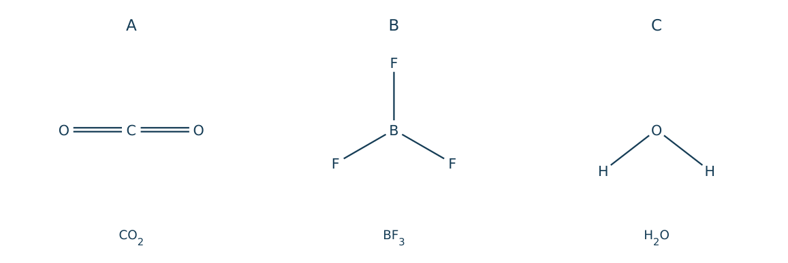
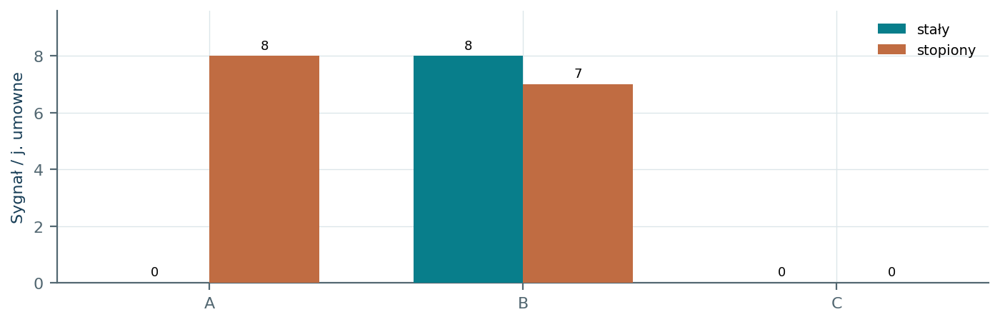
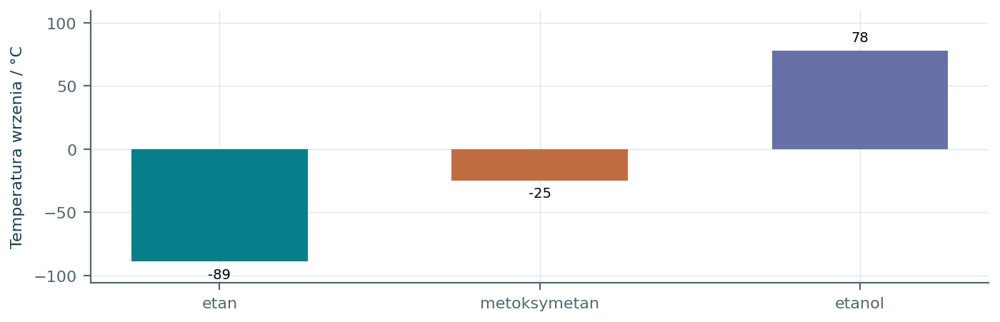
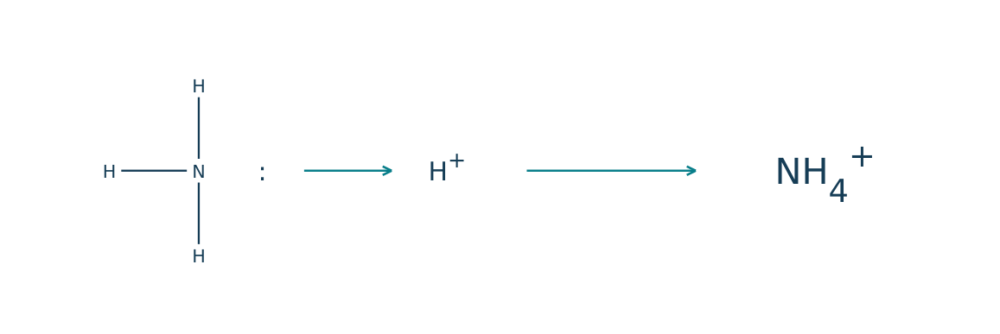
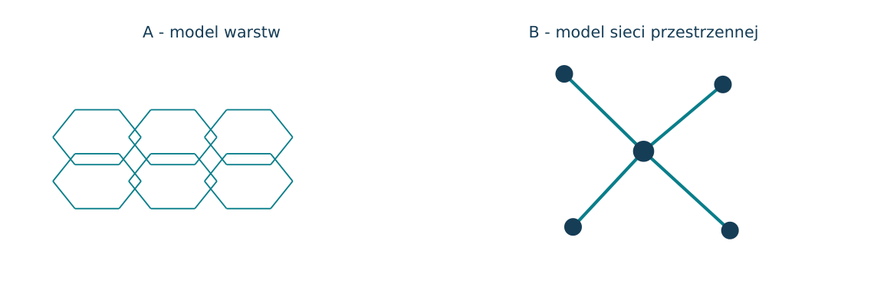
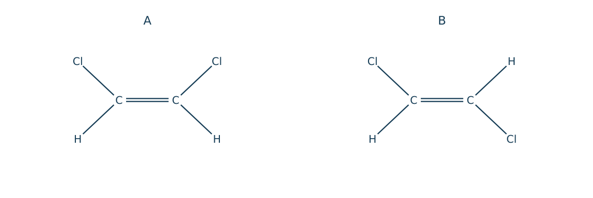
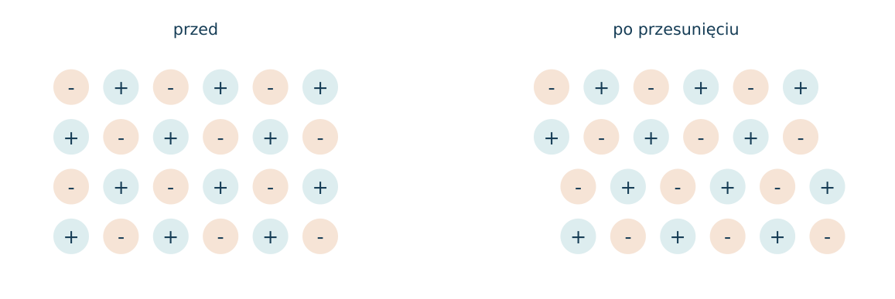
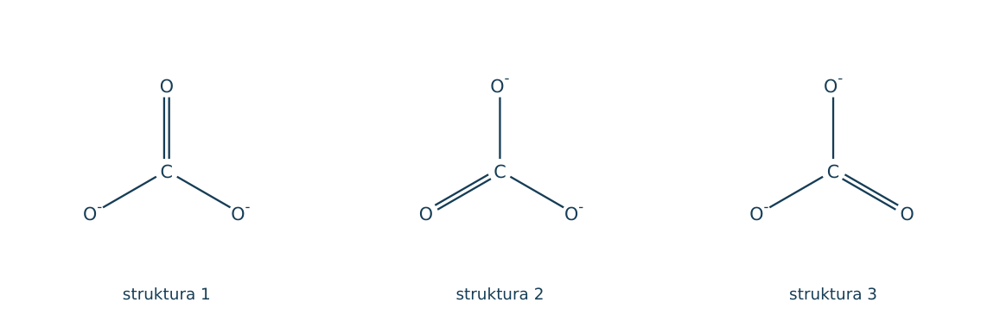
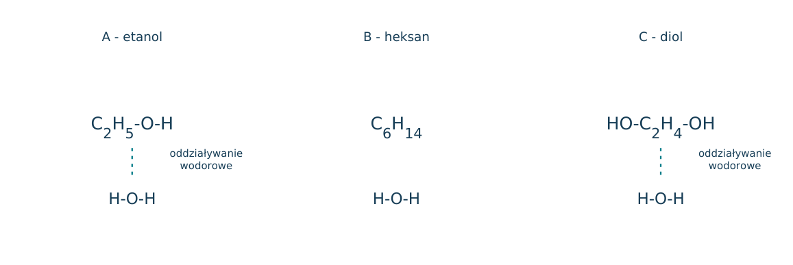

02.01 · 1 pkt
Określ dominujący rodzaj wiązania w NaCl, HCl i Cu.
Rozwiązanie
- NaCl: jonowe; HCl: kowalencyjne spolaryzowane; Cu: metaliczne.
50 zadań · 90 pkt · odpowiedzi rozwijane po samodzielnej próbie
← KatalogZadania PDFRozwiązania PDFDane do obliczeń: H 1; C 12; N 14; O 16; Na 23; Mg 24; Al 27; P 31; S 32; Cl 35,5; K 39; Ca 40; Cr 52; Mn 55; Fe 56; Cu 64; Zn 65; Ag 108; Br 80; I 127; Ba 137 (g/mol). NA = 6,02·1023 mol-1. Vm = 22,4 dm3/mol w warunkach normalnych (0°C, 1013 hPa). W 25°C Kw = 10-14. Dane podane w zadaniu mają pierwszeństwo.
Określ dominujący rodzaj wiązania w NaCl, HCl i Cu.
Oceń zdania A i B, wpisując P albo F. Każde zdanie fałszywe popraw lub krótko uzasadnij. A: CO2 jest niepolarny mimo spolaryzowanych wiązań. B: NaCl w stanie stałym dobrze przewodzi prąd dzięki ruchliwym elektronom.
Dane elektroujemności Paulinga: H=2,2, Cl=3,2. Oblicz różnicę, określ rodzaj wiązania H-Cl oraz zaznacz ładunki cząstkowe.
Narysuj wzory elektronowe H2O i NH3, zaznaczając wszystkie wolne pary.
Narysuj wzór elektronowy CO2. Ile wolnych par ma każdy atom tlenu?
Wskaż donora i akceptora pary elektronowej podczas reakcji NH3 + H+ → NH4+.
Dlaczego po utworzeniu NH4+ nie wyróżnia się jednego wiązania N-H jako fizycznie odmiennego od pozostałych?
Podaj liczbę par wiążących i wolnych przy atomie centralnym w H3O+.
Podaj kształt i typ hybrydyzacji atomu C w CO2.
Podaj kształt i typ hybrydyzacji atomu B w BF3.
Podaj kształt i typ hybrydyzacji atomu C w CH4.
Wyjaśnij, dlaczego kształt NH3 jest piramidalny mimo tetraedrycznego układu par elektronowych.
Wyjaśnij, dlaczego H2O ma kształt kątowy.
Uszereguj przybliżone kąty H-X-H w H2O, NH3 i CH4 według wzrostu.
Rozstrzygnij, czy CO2 jest polarny. Odwołaj się do geometrii i polaryzacji wiązań.
Porównaj polarność CH4 i CH3Cl. Uzasadnij.
Czy obecność spolaryzowanych wiązań zawsze oznacza polarność całej cząsteczki? Podaj kontrprzykład.
Policz wiązania sigma i pi w cząsteczce N2.
Policz wiązania sigma i pi w etenie CH2=CH2.
Policz wiązania sigma i pi w etynie HC≡CH.
Porównaj hybrydyzację atomów C oraz geometrię ich otoczenia w etanie i etenie.
Wskaż, które substancje tworzą wiązania wodorowe między własnymi cząsteczkami: CH4, NH3, HF, H2S.
Dlaczego temperatura wrzenia wody jest znacznie wyższa niż H2S?
Wyjaśnij, dlaczego etanol miesza się z wodą, a heksan ma bardzo małą rozpuszczalność w wodzie.
Dlaczego temperatura wrzenia I2 jest wyższa niż Cl2?
Dlaczego suchy kryształ NaCl nie przewodzi prądu, a stopiony NaCl przewodzi?
Dlaczego metale przewodzą prąd elektryczny w stanie stałym?
Wyjaśnij kruchość kryształów jonowych przy przesuwaniu płaszczyzn sieci.
Przyporządkuj typ kryształu: diament, lód, miedź, MgO.
Dlaczego temperatura topnienia diamentu jest znacznie wyższa niż lodu?
Wyjaśnij przewodnictwo elektryczne grafitu i brak przewodnictwa diamentu.
Porównaj budowę grafenu i grafitu.
Czym różni się pojęcie alotropu od izotopu? Odnieś odpowiedź do węgla.
Substancja A ma niską temperaturę topnienia i nie przewodzi prądu. B ma wysoką temperaturę topnienia, a jej stop przewodzi. Przypisz najbardziej prawdopodobne typy kryształów i uzasadnij.
Dla HCN narysuj wzór elektronowy, określ hybrydyzację C i liczbę wiązań pi.
Dla jonu NH4+ oblicz całkowitą liczbę elektronów walencyjnych i określ kształt.
Dla anionu CO32- policz elektrony walencyjne i narysuj jedną poprawną strukturę Lewisa. Uwzględnij ładunek.
Dlaczego rzeczywiste trzy wiązania C-O w CO32- są równocenne mimo różnych kresek w jednej strukturze Lewisa?
Zaproponuj pomiar pozwalający odróżnić roztwór sacharozy od roztworu NaCl, oba bezbarwne. Wyjaśnij wynik.
Dla SO2 przyjmij trzy domeny elektronowe wokół S, w tym jedną wolną parę. Podaj kształt, hybrydyzację w szkolnym modelu i polarność.
Każdy numer 41-50 oznacza jedno zadanie główne; podpunkty są oceniane osobno.
Schematy A-C przedstawiają położenie atomów w cząsteczkach. Przyjmij, że wiązania C-O, B-F i O-H są spolaryzowane w kierunku bardziej elektroujemnego atomu. Kształt jest istotną częścią informacji.

02.41.1 (2 pkt) Dla A-C podaj hybrydyzację atomu centralnego w szkolnym modelu.
02.41.2 (1 pkt) Wskaż cząsteczki polarne i uzasadnij wynik sumowaniem kierunków polaryzacji.
02.41.3 (1 pkt) Dla C podaj liczbę wolnych par przy atomie centralnym i wyjaśnij kształt.
A: sp; B: sp2; C: sp3.
Polarna tylko C; w liniowym CO2 i symetrycznym BF3 momenty wiązań się znoszą.
Dwie wolne pary na O; cztery domeny elektronowe dają kątowy układ atomów przy tetraedrycznym układzie domen.
A, B i C to w losowej kolejności Cu, NaCl oraz sacharoza. Pokazano wyniki pomiaru przewodnictwa w stanie stałym i po stopieniu. Wysokość słupka oznacza umowny sygnał przewodnictwa; zero to brak wykrywalnego przewodzenia.

02.42.1 (2 pkt) Przypisz substancje do próbek i podaj typ kryształu.
02.42.2 (1 pkt) Wyjaśnij różnicę zachowania A przed i po stopieniu.
02.42.3 (1 pkt) Dlaczego przewodnictwa B nie opisuje model ruchliwych jonów w roztworze?
A=NaCl, jonowy; B=Cu, metaliczny; C=sacharoza, molekularny.
W krysztale jony są unieruchomione, w stopie mogą przenosić ładunek.
Metal przewodzi dzięki zdelokalizowanym elektronom, również w stanie stałym.
Na wykresie zestawiono przybliżone temperatury wrzenia trzech związków o dwóch atomach C lub zbliżonej masie molowej. Różnice nie wynikają wyłącznie z liczby atomów. Wykorzystaj budowę i rodzaj oddziaływań.

02.43.1 (2 pkt) Wyjaśnij, dlaczego etanol ma najwyższą temperaturę wrzenia.
02.43.2 (1 pkt) Czy metoksymetan może tworzyć wiązania wodorowe z wodą? Wskaż rolę atomu O.
02.43.3 (1 pkt) Wyjaśnij, dlaczego obecność tlenu nie wystarcza do takiej samej temperatury wrzenia eteru i alkoholu.
Jego cząsteczki są donorami i akceptorami wiązań wodorowych, tworząc silne oddziaływania między sobą.
Tak, O jest akceptorem wiązań wodorowych od H2O, choć eter nie ma własnej grupy O-H.
Eter nie ma donora O-H, więc nie tworzy między własnymi cząsteczkami sieci takich wiązań jak etanol.
Schemat przedstawia powstanie jonu z NH3 oraz H+. Jeden substrat dostarcza obydwa elektrony nowego wiązania. W końcowym jonie wszystkie wiązania N-H są równocenne.

02.44.1 (2 pkt) Narysuj wzór Lewisa substratu NH3 oraz produktu z wolnymi parami i ładunkiem.
02.44.2 (1 pkt) Wskaż donor i akceptor pary oraz całkowitą liczbę elektronów walencyjnych produktu.
02.44.3 (1 pkt) Podaj kształt produktu i wyjaśnij zmianę względem NH3.
NH3: trzy wiązania N-H i jedna wolna para; NH4+: cztery N-H, brak wolnej pary, ładunek +.
Donor N w NH3, akceptor H+; produkt ma 5+4-1=8 elektronów walencyjnych.
NH4+ jest tetraedryczny; po związaniu H+ zanikła wolna para odróżniająca piramidalny NH3.
Wzór pokazuje enyn CH2=CH-C≡CH. Przeanalizuj wszystkie wiązania, uwzględniając także te do atomów H. W numeracji od lewej atomy C mają numery 1-4.
02.45.1 (2 pkt) Podaj hybrydyzację atomów C1-C4 i lokalną geometrię.
02.45.2 (1 pkt) Policz wiązania sigma oraz pi w całej cząsteczce.
02.45.3 (1 pkt) Oblicz maksymalną liczbę moli H2 przyłączaną przez 0,10 mola enynu bez rozerwania szkieletu.
C1, C2: sp2, płaska trójkątna; C3, C4: sp, liniowa.
7 sigma (3 C-C i 4 C-H) oraz 3 pi.
Trzy wiązania pi na cząsteczkę: 0,30 mola H2.
Rysunki przedstawiają modele dwóch odmian węgla: A ma warstwy sześciokątnych pierścieni, B przestrzenną sieć tetraedryczną. W A jeden elektron na atom może uczestniczyć w delokalizacji w obrębie warstwy.

02.46.1 (2 pkt) Zidentyfikuj A i B i podaj hybrydyzację atomów C.
02.46.2 (1 pkt) Wyjaśnij różnicę przewodnictwa elektrycznego.
02.46.3 (1 pkt) Powiąż budowę A ze zdolnością do pozostawiania śladu i działaniem smarującym.
A=grafit, sp2; B=diament, sp3.
Grafit ma zdelokalizowane elektrony w warstwach; w diamencie elektrony walencyjne są związane w wiązaniach sigma.
Warstwy są słabo związane między sobą i mogą się przesuwać lub oddzielać.
Na rysunku pokazano cis- i trans-1,2-dichloroeten. Obie cząsteczki są płaskie i mają te same rodzaje wiązań, lecz różną symetrię. Przyjmij dominującą polaryzację wiązań C-Cl ku Cl.

02.47.1 (2 pkt) Wskaż cząsteczkę o niezerowym momencie dipolowym i uzasadnij.
02.47.2 (1 pkt) Podaj liczbę wiązań pi i hybrydyzację każdego atomu C.
02.47.3 (1 pkt) Czy oba izomery muszą mieć tę samą temperaturę wrzenia? Wyjaśnij.
Izomer cis; wektory polaryzacji nie znoszą się. W trans symetria daje znoszenie.
Jedno pi; oba C mają sp2.
Nie; różna polarność może zmieniać oddziaływania międzycząsteczkowe i temperatury wrzenia.
Rysunek przedstawia dwuwymiarowy model kryształu jonowego przed i po przesunięciu jednej warstwy. Znaki oznaczają ładunki jonów, a nie elektrony. Model służy wyjaśnieniu właściwości mechanicznych.

02.48.1 (2 pkt) Wyjaśnij kruchość kryształu po przesunięciu warstwy.
02.48.2 (1 pkt) Czy w modelu metalicznym analogiczne przesunięcie musi od razu rozrywać kryształ? Uzasadnij.
02.48.3 (1 pkt) Przewidź przewodnictwo kryształu jonowego w stanie stałym i jego stopu.
Naprzeciw siebie mogą znaleźć się jony jednoimienne; ich odpychanie prowadzi do pęknięcia.
Nie; zdelokalizowane elektrony podtrzymują spójność po przesunięciu warstw kationów metalu.
Stały zwykle nie przewodzi; stop przewodzi dzięki ruchliwym jonom.
Dla anionu CO32- pokazano trzy możliwe rozmieszczenia wiązania podwójnego w strukturach granicznych. Rzeczywista drobina jest płaska i symetryczna; pojedyncza struktura graniczna nie opisuje jej samodzielnie.

02.49.1 (2 pkt) Oblicz liczbę elektronów walencyjnych i podaj hybrydyzację C.
02.49.2 (1 pkt) Wyjaśnij, dlaczego pomiar daje jednakowe długości trzech wiązań C-O.
02.49.3 (1 pkt) Czy symetria oznacza, że jon jest elektrycznie obojętny? Uzasadnij.
4+3·6+2=24 elektrony; C ma sp2.
Elektrony pi są zdelokalizowane między trzema wiązaniami; nie istnieje trwale wyróżnione jedno C=O.
Nie; ładunek całego anionu wynosi -2 niezależnie od geometrii.
Rysunki A-C pokazują wodę w kontakcie z cząsteczkami etanolu, heksanu i etano-1,2-diolu. Linie przerywane oznaczają możliwe wiązania wodorowe. Zachowanie mieszanin należy wyjaśnić równowagą części polarnej i niepolarnej.

02.50.1 (2 pkt) Wskaż substancje zdolne do tworzenia wiązań wodorowych z wodą i miejsca tych oddziaływań.
02.50.2 (1 pkt) Wyjaśnij tworzenie dwóch faz przez heksan i wodę.
02.50.3 (1 pkt) Przewidź kierunek zmiany rozpuszczalności alkoholi jednowodorotlenowych przy wydłużaniu łańcucha i uzasadnij.
Etanol i diol: atomy O jako akceptory oraz O-H jako donory; heksan nie ma takich miejsc.
Niepolarny heksan nie kompensuje korzystnie naruszania sieci oddziaływań wody; rozpuszczalność jest mała.
Maleje, ponieważ rośnie udział hydrofobowego fragmentu przy jednej grupie OH.